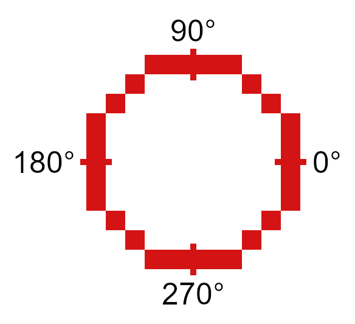
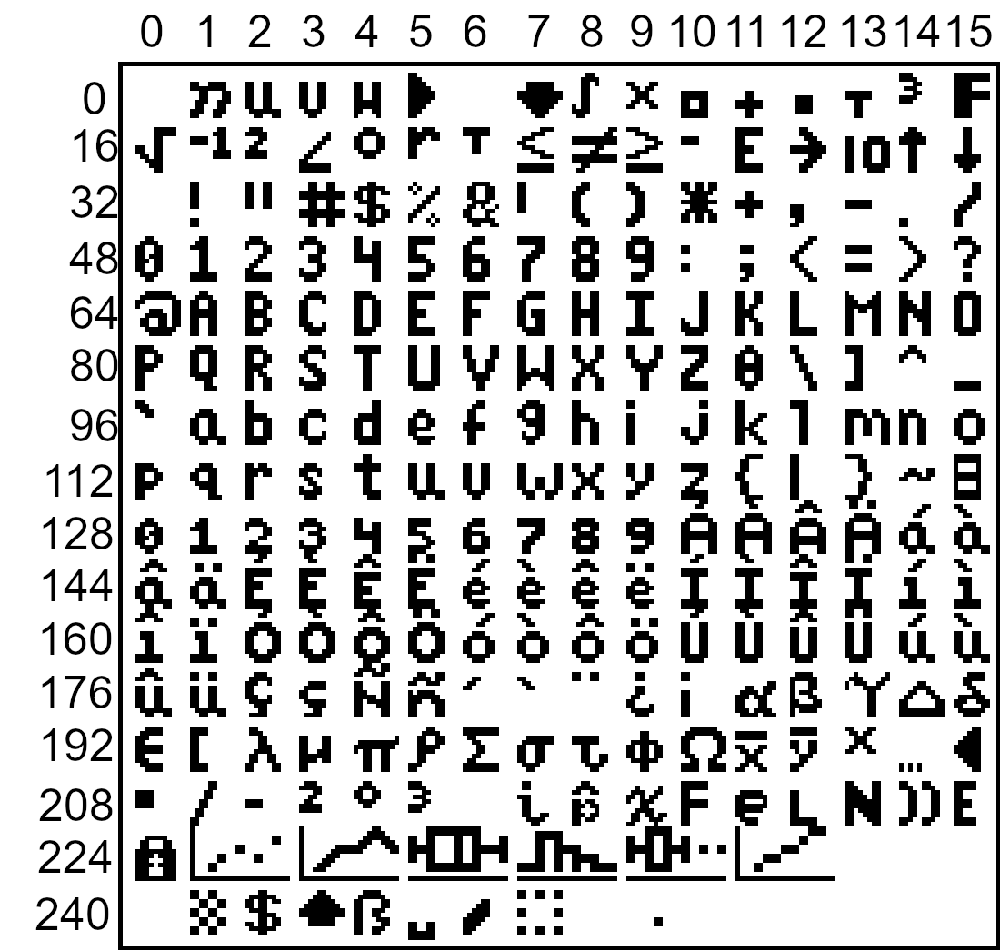
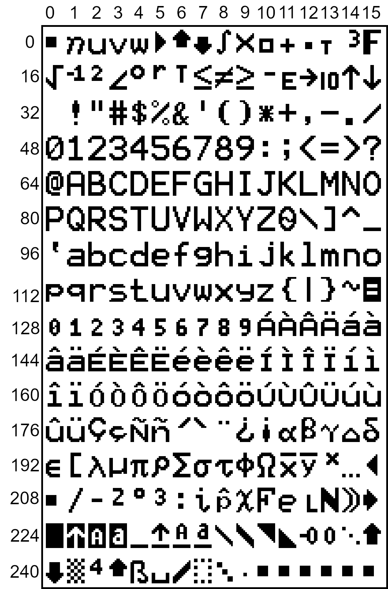

Graphics Functions
Overview
These functions are related to graphical operations. This is not the only section containing graphical operations, as some are better categorized in other sections.
Documentation
- FillScreen: det(16, low, high)
This function fills the screen with the color specified. It is faster than using FillRect to draw a rectangle over the entire screen.
- Parameters:
low: Low byte of color.high: High byte of color.
- Alternative method:
det(16, os_color) os_color: Color from TI-OS Colors menu, like RED or BLUE or NAVY.
- Colors:
A list of colors can be found here.
- Returns:
Fills the screen with the specified color.
- DrawLine: det(17, low, high, x1, y1, x2, y2)
Draws a line of the specified color from (x1, y1) to (x2, y2).
- Parameters:
low: Low byte of color.high: High byte of color.x1: x location to begin drawing the line from, beginning from the top-left corner of the screen. x has a range of 0 - 319.y1: y location to begin drawing the line from, beginning from the top-left corner of the screen. y has a range of 0 - 239.x2: x location to finish drawing the line at, beginning from the top-left corner of the screen.y2: y location to finish drawing the line at, beginning from the top-left corner of the screen.
- Alternative method:
det(17, os_color, x1, y1, x2, y2) os_color: Color from TI-OS Colors menu, like RED or BLUE or NAVY.
- Colors:
A list of colors can be found here.
- Returns:
Draws a line of the specified color from (x1, y1) to (x2, y2).
- SetPixel: det(18, low, high, x, y)
Sets the pixel located at (x, y) to the color specified.
- Parameters:
low: Low byte of color.high: High byte of color.x: x location of the pixel to set, beginning from the top-left corner of the screen.y: y location of the pixel to set, beginning from the top-left corner of the screen.
- Alternative method:
det(17, os_color, x, y) os_color: Color from TI-OS Colors menu, like RED or BLUE or NAVY.
Note
If you use the alternative method and use 0 for
os_color, it will invert the specified pixel instead of drawing a color.- Colors:
A list of colors can be found here.
- Returns:
Sets the pixel at (x, y) to the color specified, or inverts it if using the alternative method with
os_colorbeing 0.
- GetPixel: det(19, x, y)
Returns a low and high byte representing the color of the pixel at (x, y) in
AnsandThetarespectively.- Parameters:
x: x location of the pixel to check, beginning from the top-left corner of the screen.y: y location of the pixel to check, beginning from the top-left corner of the screen.
- Returns:
Ans: Low byte of the color of the pixel checked.Theta: High byte of the color of the pixel checked.
- PixelTestColor: det(20, row, column)
This function works just like the OS function pxl-Test() does, however, it will return 0 if no pixel is present and the OS color of the pixel if one is present. This only applies to the graph screen, like pxl-Test().
- Parameters:
row: Row of the graphscreen that contains the pixel to test.column: Column of the graphscreen that contains the pixel to test.
Tip
The arguments and functionality of this are identical to pxl-Test(), other than the fact that this returns the color of the pixel if one is present.
- Returns:
Ans: 0 if no pixel was present, otherwise will contain the OS color of the pixel tested.
- PutSprite: det(21, x, y, width, height, string)
This function draws a sprite at (x, y) with a width of width and a height of height, using data specified by string. For example, if the user specifies the string as 0, it will read the data from Str0. It is designed to be fast, and so it does not have as much error checking, meaning that it will display a sprite of the given width and height regardless of the length of the given sprite data. The sprite data is made up of hex values referring to xLIBC colors, which can be found here. The data is stored left to right and top to bottom. For example, take a sprite that looks like this:
A sample sprite.
We’ll convert it into a matrix, where each pixel is replaced with the hex equivalent of its xLIBC color:
[FF, FF, 00, 00, 00, 00, FF, FF FF, 00, E6, E6, E6, E6, 00, FF 00, E6, 00, E6, E6, 00, E6, 00 00, E6, 00, E5, E5, 00, E6, 00 00, E5, E5, E5, E5, E5, E5, 00 00, E5, E5, 00, 00, E5, E5, 00 FF, 00, E5, E5, E5, E5, 00, FF FF, FF, 00, 00, 00, 00, FF, FF]
Then, to make it into a string that we can use in a program, we’ll remove the newlines and commas, like this:
"FFFF00000000FFFFFF00E6E6E6E600FF00E600E6E600E60000E600E5E500E60000E5E5E5E5E5E50000E5E50000E5E500FF00E5E5E5E500FFFFFF00000000FFFF" -> Str9
More detailed instructions on converting sprites can be found here.
- Parameters:
x: x location to draw the sprite, beginning at the top-left corner of the screen.y: y location to draw the sprite, beginning at the top-left corner of the screen.width: Width of the sprite in pixels.height: Height of the sprite in pixels.string: Which string variable to read the data from, 0-9.
- Colors:
Uses hex codes referring to the xLIBC colors. A good resource for the xLIBC palette can be found here.
- Returns:
Draws a sprite of the specified width and height at (x, y).
Warning
Keep in mind that the function will not check if your string is long enough for the provided width and height. If your string is an incorrect size, it will still draw a sprite of the specified width and height, though parts of the drawn sprite could be garbage.
- GetStringWidth: det(54, font); Ans = string
Gets the width of a string in pixels. This command works with both the OS large and small fonts.
- Parameters:
font: Whether to use the OS large or small font. 0 for small font, 1 for large font.Ans: Contains the string to be checked.
- Returns:
Theta: Contains the width of the string in pixels.
- Errors:
..S:NT:STifAnsis not a string.
- TransSprite: det(55, x, y, width, height, transparency, string)
Draws a sprite where the user specifies the color to be interpreted as transparency. The rest of the functionality is identical to the PutSprite command.
- Parameters:
x: x location to draw the sprite, beginning at the top-left corner of the screen.y: y location to draw the sprite, beginning at the top-left corner of the screen.width: Width of the sprite in pixels.height: Height of the sprite in pixels.transparency: Color in the sprite to be interpreted as transparency (0-255).string: Which string variable to read the data from, 0-9.
- Returns:
Draws a sprite with transparency of the specified width and height at (x, y).
Warning
Keep in mind that the function will not check if your string is long enough for the provided width and height. If your string is an incorrect size, it will still draw a sprite of the specified width and height, though parts of the drawn sprite could be garbage.
- ScaleSprite: det(56, x, y, width, height, scale_x, scale_y, string)
Draws a scaled sprite where the user can specify the scale value of both X and Y. The rest of the functionality is identical to the PutSprite command.
- Parameters:
x: x location to draw the sprite, beginning at the top-left corner of the screen.y: y location to draw the sprite, beginning at the top-left corner of the screen.width: Unscaled width of the sprite in pixels.height: Unscaled height of the sprite in pixels.scale_x: Width scaling value.scale_y: Height scaling value.string: Which string variable to read the data from, 0-9.
- Returns:
Draws a scaled sprite of the specified (scaled) width and height at (x, y).
Warning
Keep in mind that the function will not check if your string is long enough for the provided width and height. If your string is an incorrect size, it will still draw a sprite of the specified width and height, though parts of the drawn sprite could be garbage.
- ScaleTSprite: det(57, x, y, width, height, scale_x, scale_y, transparency, string)
Draws a scaled sprite where the user specifies the color to be interpreted as transparency. The rest of the functionality is identical to the PutSprite command.
- Parameters:
x: x location to draw the sprite, beginning at the top-left corner of the screen.y: y location to draw the sprite, beginning at the top-left corner of the screen.width: Unscaled width of the sprite in pixels.height: Unscaled height of the sprite in pixels.scale_x: Width scaling value.scale_y: Height scaling value.transparency: Color in the sprite to be interpreted as transparency (0-255).string: Which string variable to read the data from, 0-9.
- Returns:
Draws a scaled sprite with transparency of the specified (scaled) width and height at (x, y).
Warning
Keep in mind that the function will not check if your string is long enough for the provided width and height. If your string is an incorrect size, it will still draw a sprite of the specified width and height, though parts of the drawn sprite could be garbage.
- ShiftScreen: det(58, direction, amount, x, y, width, height)
Shifts the pixels within a user-specified region of the screen a specified amount of pixels in a specified direction. The following directions and corresponding values are below:
Value
Direction
0
Up
1
Down
2
Left
3
Right
- Parameters:
direction: Direction to move the screen in, as seen in the table above.amount: The amount of pixels to move the screen.x: Starting X position of the region of the screen to shift, beginning at the top-left corner of the screen.y: Starting Y position of the region of the screen to shift, beginning at the top-left corner of the screen.width: Width of the region of the screen to shift.height: Height of the region of the screen to shift.
- Alternative method:
det(58, direction, amount) This alternative method acts as a shorthand way to shift the entire screen, rather than a specified region.
- Returns:
Moves the screen in the specified direction.
- RGBto565: det(59, r, g, b)
Converts an RGB color to a high and low byte that can be used in other Celtic functions.
- Parameters:
r: Red color value.g: Green color value.b: Blue color value.
- Returns:
Ans: Low byte of the color.Theta: High byte of the color.
- DrawRect: det(60, low, high, x, y, width, height)
Draws an unfilled rectangle of user-specified color, location, and size.
- Parameters:
low: Low byte of color.high: High byte of color.x: x location to begin drawing the rectangle, starting at the top-left corner of the screen.y: y location to begin drawing the rectangle, starting at the top-left corner of the screen.width: Width of the rectangle to draw.height: Height of the rectangle to draw.
- Alternative method:
det(60, os_color, x, y, width, height) os_color: Color from TI-OS Colors menu, like RED or BLUE or NAVY.
- Colors:
A list of colors can be found here.
- Returns:
Draws the unfilled rectangle.
- DrawCircle: det(61, low, high, x, y, radius)
Draws an unfilled circle with the user specified color. The
xandyarguments refer to the center point of the circle.- Parameters:
low: Low byte of color.high: High byte of color.x: x location of the center of the circle, starting at the top-left corner of the screen.y: y location of the center of the circle, starting at the top-left corner of the screen.radius: Radius of the circle.
- Alternative method:
det(61, os_color, x, y, radius) os_color: Color from TI-OS Colors menu, like RED or BLUE or NAVY.
- Colors:
A list of colors can be found here.
- Returns:
Draws the unfilled circle.
- FillCircle: det(62, low, high, x, y, radius)
Draws a filled circle with the user specified color. The
xandyarguments refer to the center point of the circle.- Parameters:
low: Low byte of color.high: High byte of color.x: x location of the center of the circle, starting at the top-left corner of the screen.y: y location of the center of the circle, starting at the top-left corner of the screen.radius: Radius of the circle.
- Alternative method:
det(62, os_color, x, y, radius) os_color: Color from TI-OS Colors menu, like RED or BLUE or NAVY.
- Colors:
A list of colors can be found here.
- Returns:
Draws the filled circle.
- DrawArc: det(63, low, high, x, y, radius, start_angle, end_angle)
Draws the outline of a circular arc. The
xandyarguments refer to the center of the arc, which begins atstart_angleand ends atend_angle. Angle values go from 0-360, and the end angle must be greater than the start angle. 0 degrees is the right most part of the circle, and goes counter-clockwise.A diagram showing various points along the circle.
- Parameters:
low: Low byte of color.high: High byte of color.x: x location of the center of the arc, starting at the top-left corner of the screen.y: y location of the center of the arc, starting at the top-left corner of the screen.radius: Radius of the arc.start_angle: Angle to begin drawing the arc at.end_angle: Angle to finish drawing the arc at.
- Alternative method:
det(63, os_color, x, y, radius, start_angle, end_angle) os_color: Color from TI-OS Colors menu, like RED or BLUE or NAVY.
- Colors:
A list of colors can be found here.
- Returns:
Draws the user-specified arc.
- DispTransText: det(64, font, low, high, x, y); Str9 = string to display
Draws colored text with a transparent background in either the OS large or small font.
- Parameters:
font: Whether to use the OS large or small font. 0 for small font, 1 for large font.low: Low byte of color.high: High byte of color.x: x location to begin drawing the text at, starting at the top-left corner of the screen.y: y location to begin drawing the text at, starting at the top-left corner of the screen.Str9: String to display.
- Alternative method:
det(64, font, os_color, x, y) os_color: Color from TI-OS Colors menu, like RED or BLUE or NAVY.
- Colors:
A list of colors can be found here.
- ChkRect: det(65, x0, y0, width0, height0, x1, y1, width1, height1)
Checks if a rectangle intersects with another rectangle.
- Parameters:
x0: x coordinate of rectangle 0, starting at the top-left corner of the screen.y0: y coordinate of rectangle 0, starting at the top-left corner of the screen.width0: Width of rectangle 0.height0: Height of rectangle 0.x1: x coordinate of rectangle 1, starting at the top-left corner of the screen.y1: y coordinate of rectangle 1, starting at the top-left corner of the screen.width1: Width of rectangle 1.height1: Height of rectangle 1.
- Returns:
Ans: 0 if the rectangles do not intersect, and 1 if they do.
- PutChar: det(66, font, fg_low, fg_high, bg_low, bg_high, x, y, char)
Displays a character specified by the user at
x,y, with a user-specified background color as well.charcan range from 0 - 255. In order to figure out thecharvalue for your preferred character, you can use the handy images below. Simply take the X and Y values on the chart and add them together.Small Font
Large Font
- Parameters:
font: Whether to use the OS large or small font. 0 for the small font and 1 for the large font.fg_low: Low byte of the foreground color.fg_high: High byte of the foreground color.bg_low: Low byte of the background color.bg_high: High byte of the background color.x: X coordinate to display the character at, beginning at the top-left corner of the screen.y: Y coordinate to display the character at, beginning at the top-left corner of the screen.char: The numeric code associated with the character to display. See images above for more info.
- Alternative method:
det(66, font, fg_os, bg_os, x, y, char) fg_os: Foreground color from TI-OS Colors menu, like RED or BLUE or NAVY.bg_os: Background color from TI-OS Colors menu, like RED or BLUE or NAVY.
- Colors:
A list of colors can be found here.
- Returns:
Displays the specified character.
- PutTransChar: det(67, font, low, high, x, y, char)
Displays a character specified by the user at
x,y, with a transparent background. See the above command for information on character codes.- Parameters:
font: Whether to use the OS large or small font. 0 for the small font and 1 for the large font.low: Low byte of the color.high: High byte of the color.x: X coordinate to display the character at, beginning at the top-left corner of the screen.y: Y coordinate to display the character at, beginning at the top-left corner of the screen.char: The numeric code associated with the character to display. See images above for more info.
- Alternative method:
det(67, font, os_color, x, y, char) os_color: Color from TI-OS Colors menu, like RED or BLUE or NAVY.
- Colors:
A list of colors can be found here.
- Returns:
Displays the specified character.
- HorizLine: det(68, low, high, x, y, length)
Draws a horizontal line beginning at
x,y, with a length oflength.- Parameters:
low: Low byte of the color.high: High byte of the color.x: X coordinate to begin drawing the line at, beginning at the top-left corner of the screen.y: Y coordinate to begin drawing the line at, beginning at the top-left corner of the screen.length: The length of the horizontal line.
- Alternative method:
det(68, os_color, x, y, length) os_color: Color from TI-OS Colors menu, like RED or BLUE or NAVY.
- Colors:
A list of colors can be found here.
- Returns:
Draws a horizontal line
lengthpixels long, beginning atx,y.
- VertLine: det(69, low, high, x, y, length)
Draws a vertical line beginning at
x,y, with a length oflength.- Parameters:
low: Low byte of the color.high: High byte of the color.x: X coordinate to begin drawing the line at, beginning at the top-left corner of the screen.y: Y coordinate to begin drawing the line at, beginning at the top-left corner of the screen.length: The length of the vertical line.
- Alternative method:
det(69, os_color, x, y, length) os_color: Color from TI-OS Colors menu, like RED or BLUE or NAVY.
- Colors:
A list of colors can be found here.
- Returns:
Draws a vertical line
lengthpixels long, beginning atx,y.